Help › Android phone
Measured Size on an Android phone
On an Android phone, Measured Size works in the Firefox app. It does not work in Chrome or in your phone's own browser. These steps start by getting Firefox. It is free.
Measured Size is an add-on: a small extra that works inside Firefox. You add it once. Then, on any bra listing, it shows your size in that store's own labels.
Get Firefox
-
On your phone, open Firefox in the Google Play Store.
This link opens the Play Store app on Firefox's page, which looks like this. Or open the Play Store yourself and search for Firefox.
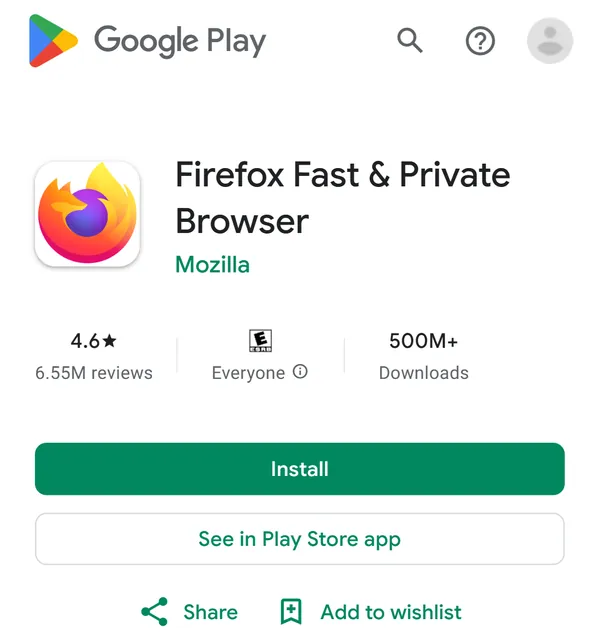
-
Tap "Install".
Wait until it has finished.
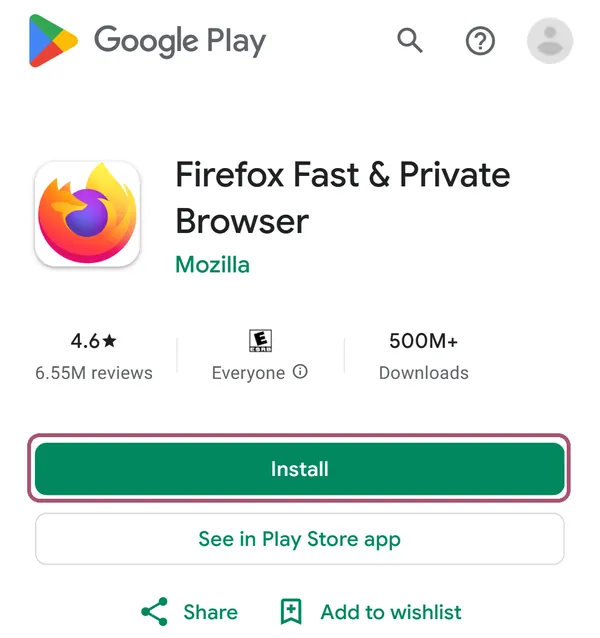
-
Open Firefox.
Tap "Open" in the Play Store, or the Firefox icon on your phone. The first time, Firefox shows a few welcome screens: you can skip its questions, "Set as default browser" included.
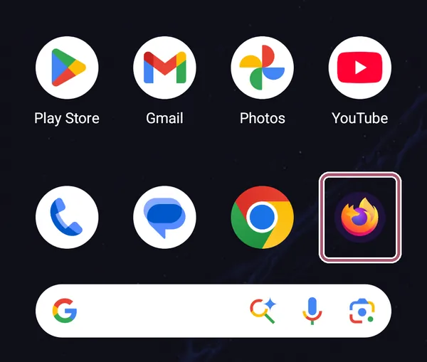
Add Measured Size to Firefox
-
In Firefox, type addons.mozilla.org/firefox/addon/measured-size in the address bar at the top.
Type it in Firefox, not in the browser you are reading this in. The button below works only if you are reading this in Firefox.
-
Tap "Add to Firefox".
-
Tap "Add".
Firefox asks this for every add-on, and lists what it may do. Gap's sites and Target load their sizes as the page opens, so Measured Size may look at those pages as they open. Everywhere else it reads a page only when you open it there, and it sends nothing anywhere.
-
Tap "OK".
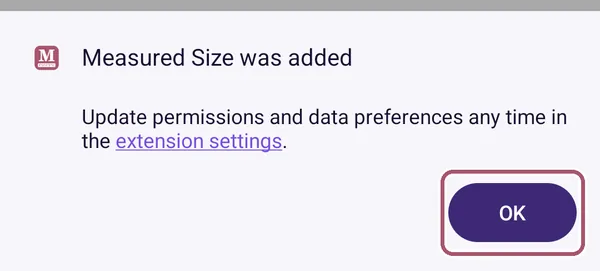
See your size on a bra listing
-
In Firefox, open a bra's own page in a store, like Macy's, Target or a brand's shop.
A page for one bra, with its sizes, not a page of search results.
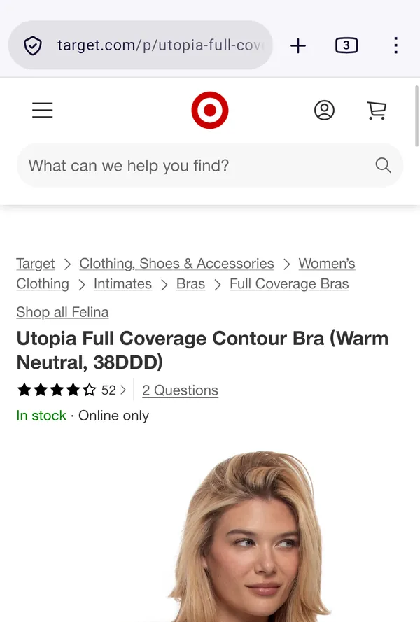
-
Tap the menu button, the three dots at the top right.
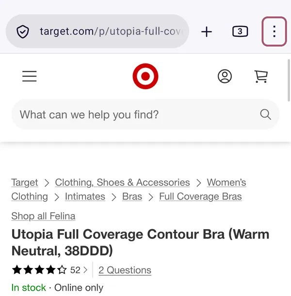
-
Tap "Extensions".
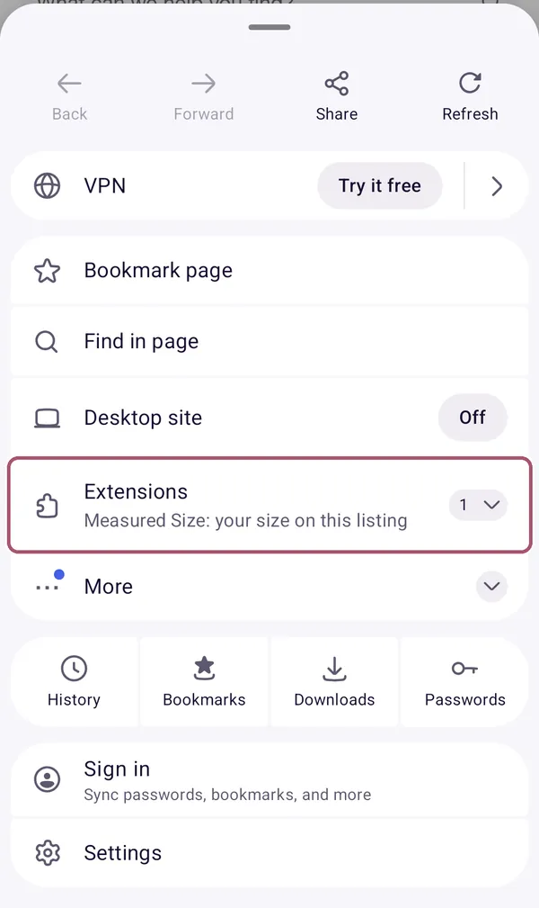
-
Tap "Measured Size".
Its full name there is "Measured Size: your size on this listing".
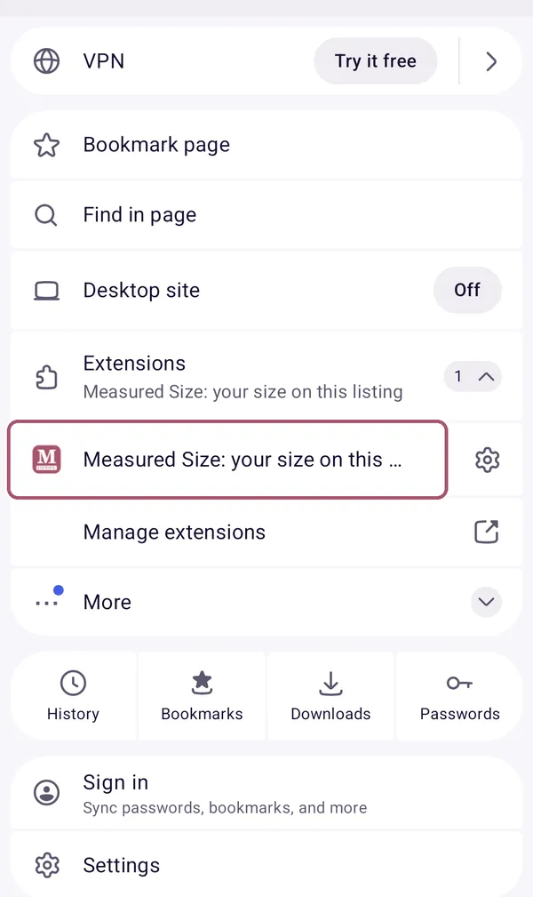
-
Type your underbust and your bust in their boxes.
Only the first time. If you measured in centimeters, tap "cm" at the top first. Decimals are fine.
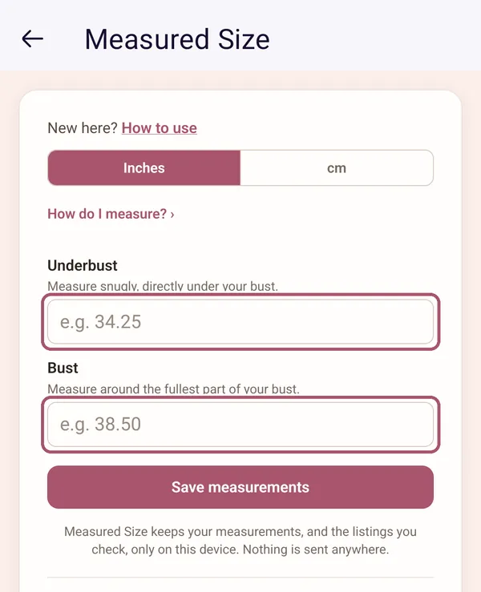
-
If you need help measuring, tap "How do I measure?".
A drawing shows where the tape goes for each one. Tap it again to close it.
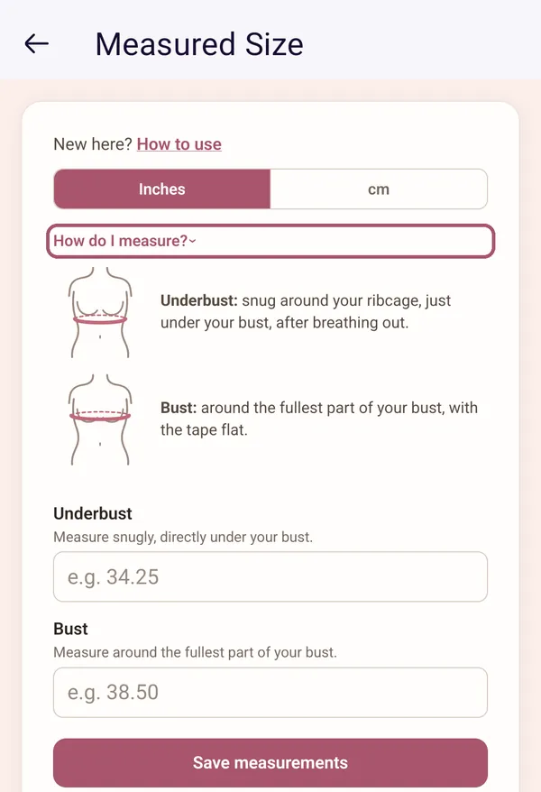
-
Tap "Save measurements".
If the keyboard covers it, tap your phone's Back button once to put the keyboard away. It says "Measurements saved" for a moment, then shows your size.
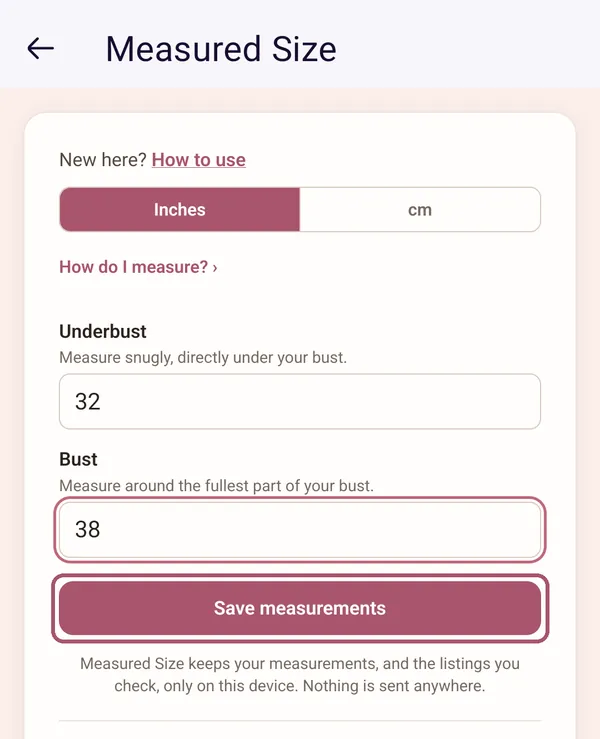
-
Read your size.
The big size is the one to choose on this listing. The rest of the card is explained on Reading the card. To go back to the bra's page, tap your phone's Back button or the arrow at the top left. This picture and the next two are a bra at Macy's.
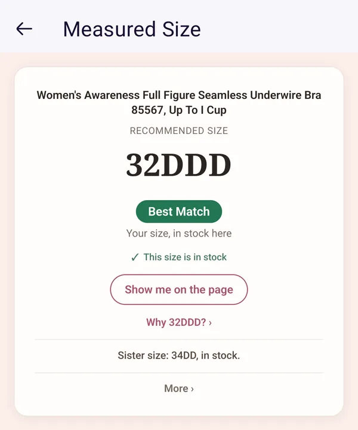
-
Tap "Show me on the page" to find your size on the store's page.
The card closes, and Measured Size outlines your size on the page for a few seconds. It never picks a size for you.
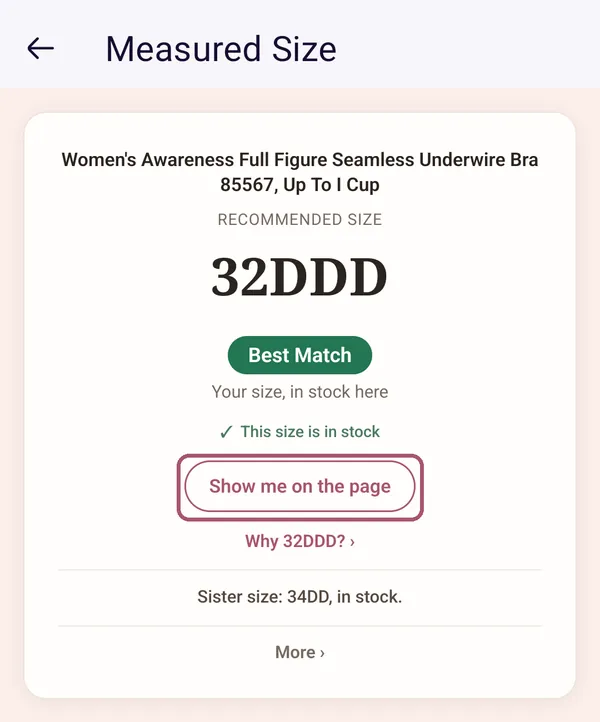
-
Look for the outline around your size on the page.
The store may cross out a band until you pick the cup: that is the store's own page.
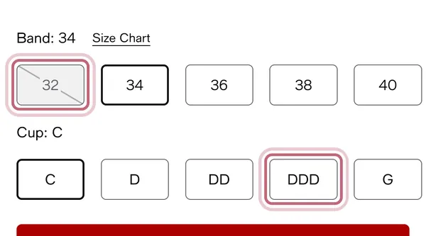
-
If it says "Couldn't read this listing in time", open Measured Size from the menu again.
This can happen the first time on a page. The second time works.
The size button on Target
On Target's bra pages, a small pink button, "Measured Size: find my size", sits at the bottom of the page. In Firefox, open Measured Size from the menu as above to see your size there.
-
Find the pink "Measured Size: find my size" button at the bottom of the page.
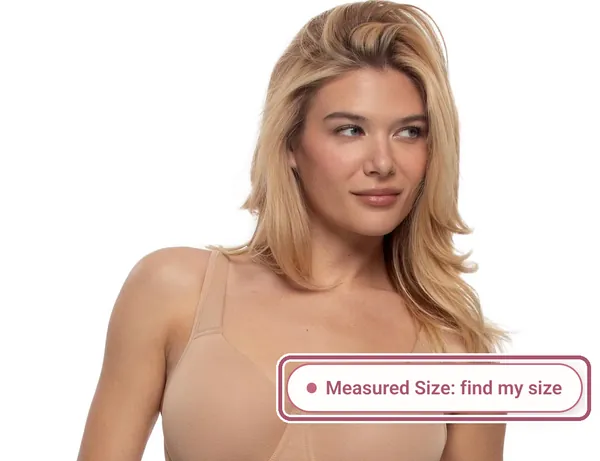
-
To hide it, untick "Size pill on bra listings" under "More" on the card.
That is the size button's switch. Tick it again to bring it back.
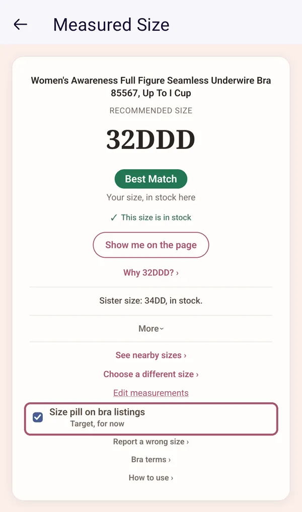
Dark mode and larger text
-
Use dark mode or larger text if you like.
Measured Size follows your phone's own settings. Change them in your phone's Settings app, under "Display".
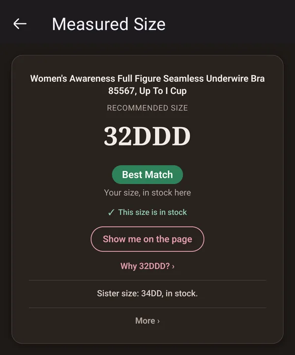
Next time, on any bra listing in Firefox: the three dots, then "Extensions", then Measured Size.
Stuck? See Something's not working, or write to support@measuredsize.com.
Other guides: Chrome · Firefox · iPhone · iPad · Android phone · Something's not working · Reading the card